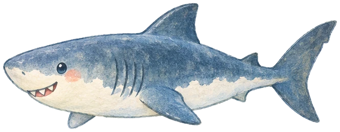
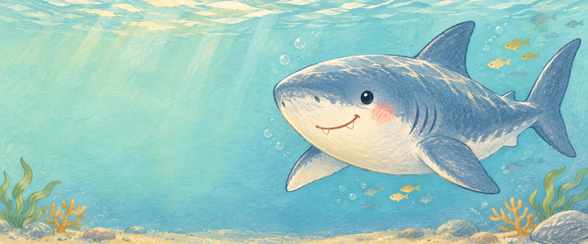

SHARK PERSONALITY QUIZ
30の質問に答えて、32種類のサメからあなたに似た一匹を見つけよう。
SHARK FIELD GUIDE
質問 1 / 30
深度 0m
あなたに似たサメは
出会った場所
5つの見方それぞれで、あなたがどちら寄りかを表しています。印（●）の付いたほうが、あなたの傾向です。
リンクから開いた結果のため、寄り具合の数字は出していません。
人との関わり方と動き方が、あなたと反対のタイプ。互いの苦手を補い合えます。
リンクで共有されるのはサメのタイプだけです。
ABOUT THE QUIZ
30の質問に、いまの自分にいちばん近い選択肢で答えてください。人との関わり方や動き方など、5つの傾向をもとにあなたに似たサメを見つけます。
回答はブラウザー内で計算します。回答履歴は保存せず、共有リンクにはサメのタイプだけが入ります。Xでシェアするときは、投稿画面で内容を確認できます。
この診断は、サメの生態をヒントにした遊びです。
この診断は、JavaScript を有効にすると動きます。